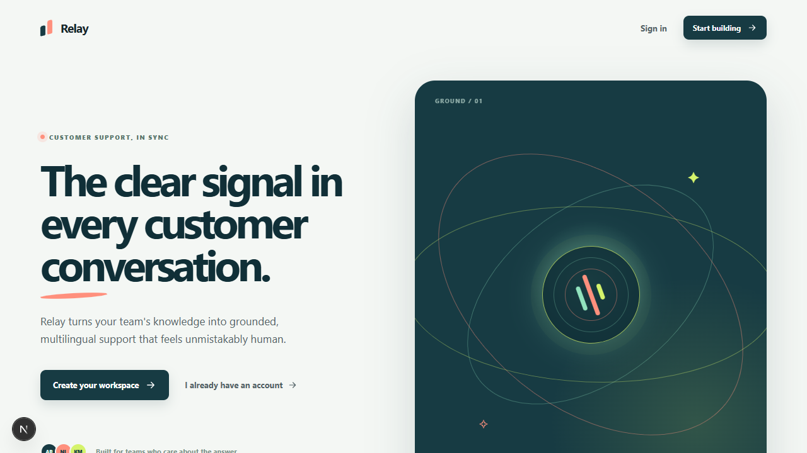

The clear signal in every customer conversation.
How we designed, built, secured, tested, and prepared a multi-tenant AI support SaaS—from first principles to an accepted MVP.
One product. Three knowledge sources. One channel-neutral support brain.

A tenant signs up, creates a bot, connects trusted knowledge, tests grounded answers, and installs a fast widget—without handing over provider control or weakening tenant isolation.
Support teams have knowledge. Customers still wait for answers—or receive guesses.
Knowledge is fragmented
Policies live across files, sites, and tribal knowledge. Finding the right answer is slower than answering it.
Generic AI is risky
Without retrieval boundaries, citations, and safe fallback, fluent responses can become expensive hallucinations.
SaaS trust is structural
Tenant data, provider secrets, jobs, vectors, and logs must be isolated from day one—not patched later.
Our goal: grounded, multilingual answers at low cost, with graceful failure and evidence.
Built around three actors—and a deliberately focused MVP.
End customer
Asks in any supported language, receives a streamed answer, sees citations where the channel supports them, and gets a safe fallback when evidence is weak.
Tenant team
Creates bots, adds knowledge, watches ingestion, tests answers, configures the widget, controls provider routing, and monitors usage.
Platform operator
Runs migrations, health checks, workers, backups, recovery, CI, cost and latency telemetry. Full platform-admin UI is intentionally deferred.
From empty workspace to a support bot in seven steps.
workspace
bot
knowledge
ingests
playground
widget / BYOK
measure
A complete feature map—not just a chat endpoint.
Identity & tenancy
Register, login, refresh rotation, organization bootstrap, owner/admin/member roles.
Bot lifecycle
Bot CRUD, status, language, appearance, exact-origin publishable keys and revocation.
Knowledge
PDF, DOCX, TXT, MD, bounded websites, manual Q&A, versioning and statuses.
RAG engine
Hybrid retrieval, RRF fusion, deduplication, citations, prompt-injection boundary.
Conversations
Recent turns, rolling summary, retention hooks, ordered messages, SSE streaming.
Provider control
Low-cost tiering, failover policy, circuit state, secure optional tenant BYOK.
Product UX
Responsive dashboard, playground, usage view, widget preview and install snippet.
Operations
Docker, health/readiness, migrations, backup/restore, rollback rehearsal, CI.
A channel-neutral core surrounded by thin delivery adapters.
Async FastAPI application
/v1 · 34 routesEach technology was chosen for a specific product constraint.
Python 3.12 + FastAPI
AI/data ecosystem, async I/O, typed APIs, native streaming, strong validation.
Next.js 16 + React 19
Responsive tenant dashboard, server-rendered shells, production routing and tooling.
Preact + Vite
Small embeddable runtime, isolated custom element, fast customer-site load.
PostgreSQL + pgvector
SaaS relational integrity and semantic/lexical retrieval in one operational system.
Redis + ARQ
Queueing, rate limits, provider health, and work isolation without heavy orchestration.
SQLAlchemy + Alembic
Explicit async persistence, reversible schema history, testable constraints and RLS.
HTTP Server-Sent Events
Proxy-friendly one-way token streaming with cancellation and simple browser clients.
Docker + GitHub Actions
Hosting-agnostic builds, reproducible gates, production topology and recovery drills.
A monorepo plus a durable cross-agent delivery system.
├─ apps/api · FastAPI + domains + worker
├─ apps/web · Next.js dashboard
├─ packages/widget · Preact custom element
├─ packages/api-client · shared TS contracts
├─ infra · dev + production Compose
├─ tests/e2e · critical browser flows
├─ docs · security + operations + product
└─ CONTEXT · TASKS · PLAN · AGENTS
Tenant isolation is a layered invariant—not one WHERE clause.
Resolve authenticated tenant, bot, role, and origin once; reject conflicts early.
IDENTITYEvery tenant-owned query carries explicit `tenant_id` predicates and ownership checks.
APPLICATIONTransaction-local tenant context + forced policies under a non-superuser runtime role.
DATABASEQueue payloads, rate-limit keys, storage paths, retrieval filters, and logs include tenant scope.
INFRACross-tenant reads/writes, pgvector retrieval, append-only usage, credentials, and policies are tested live.
VERIFICATIONSecure onboarding without pushing tokens into browser storage.
Same-origin BFF
Next.js stores access/refresh tokens only in HttpOnly, SameSite cookies.
Role boundaries
Owner/admin mutate bots, keys, knowledge, and BYOK; members remain read-oriented.
Anonymous widget
Separate short-lived JWT bound to tenant, bot, key, conversation, origin, token ID, and audience.
Heavy work is asynchronous, idempotent, bounded, and version-safe.
Secure files
PDF/DOCX/TXT/MD, streamed size/type/signature validation, archive safety, cleanup.
Bounded websites
Exact-host crawl, robots/rate/depth/page limits, DNS/IP SSRF and redirect defense.
Authoritative Q&A
Question/answer becomes a short trusted document; unchanged edits do not duplicate work.
Semantic meaning + exact words + tenant filters = traceable evidence.
Vector candidates
pgvector cosine similarity captures meaning across phrasing.
Lexical candidates
PostgreSQL tsvector/GIN keeps exact terms, policies, IDs, and names discoverable.
Hard filters
Tenant, bot, source, status, and language are applied before ranking.
Reciprocal-rank fusion
top K onlyThe model is one replaceable step inside a guarded answer pipeline.
Evidence available
Answer with validated `[n]` citations and return traceable source metadata.
Draft invalid
Promote/retry through the strong tier within the total request budget.
Evidence weak
Skip model cost and return a localized “I don't know from available information.”
Start cheap. Promote deliberately. Fail over only when it is safe.
Low-cost default
Observable router
Weak retrieval · complex query · tenant policy · validation retry · provider health
Strong / next target
Customer-controlled provider access without turning secrets into product data.
platform_only
Default onboarding path. No tenant secret required.
tenant_first + explicit fallback
Tenant targets first; platform spend only with explicit consent.
tenant_only
Fails safely when unavailable or revoked—never spends platform credentials silently.
Enough memory for coherence—without inventing a permanent customer profile.
Context window
older state, compacted
bounded, ordered, tenant-owned
Ready → delta → replace
Incremental content, citation, completion, and safe error events.
Cancellation
Disconnect stops generation and avoids partial message persistence.
Ordered writes
Row-locked sequence allocation prevents conversation races.
Atomic usage
Messages and all incurred model usage/cost commit together.
Consent-aware long-term profile memory is deferred because it needs view, correction, deletion, retention, residency, and identity-linking rules.
A rich control plane and a tiny customer-site runtime.
One relational spine, grouped by responsibility.
Identity
Knowledge
Agent runtime
Provider control
Versioned REST for control. SSE for conversations. Small interfaces for change.
/auth · /me
Register, login, refresh, tenant-bound identity.
/bots · /keys
Bot lifecycle, allowed origins, key rotation and revocation.
/sources
File, website, manual Q&A, status, edit, delete.
/playground
Private session creation and grounded SSE messages.
/widget
Anonymous session and message streaming with exact-origin validation.
/providers
Write-only credential lifecycle and explicit routing policy.
/usage
Tenant summaries by bot, time range, operation, provider and model.
/health
Liveness and dependency-aware readiness for operations.
We used failures as architecture feedback—not as boxes to bypass.
Release-blocking proofs
End-to-end proofs
Application overhead is comfortably inside the MVP budgets.
First ready p95
30 sequential warm samples in production Compose.
Manual source → ready
Includes API create, Redis queue, worker processing, embedding, and activation.
Reproducible services, a one-shot migration gate, and rehearsed recovery.
What we optimized for—and what we intentionally postponed.
Show the product and its trust boundaries in one narrative.
Phase 1 is accepted. Production launch is a separate decision.
Working web MVP
- Tenancy, auth, roles
- Knowledge + RAG
- Provider routing + BYOK
- Dashboard + widget
- CI + production acceptance
Reliability & channels
- Managed S3 + KMS
- Real multi-provider redundancy
- Metrics and alerts
- WhatsApp / Telegram / email
- Consent-aware durable memory
Business & humans
- Stripe and quotas
- Platform admin
- Human inbox
- Assignment / takeover
- Account-management depth
Launch prerequisites
- Hosting + budget selection
- TLS/SSE edge review
- Managed storage/KMS
- Legal + security sign-off
- Load / accessibility / pen test
We did not build “a chatbot.” We built the foundation of a trustworthy support product.
Grounded answers. Strict tenant isolation. Cost-aware routing. Optional customer-controlled providers. A fast product surface. And evidence that the complete slice works.